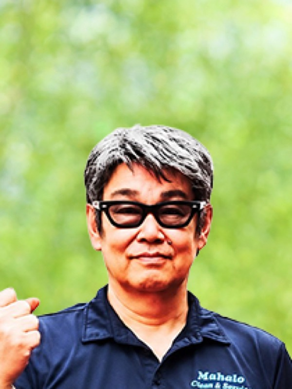
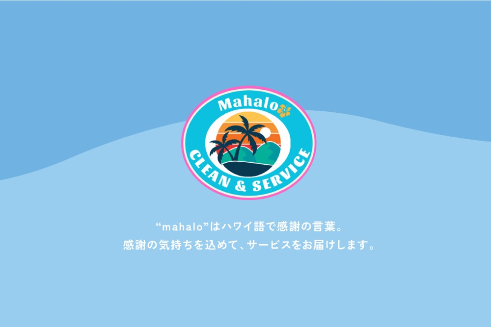
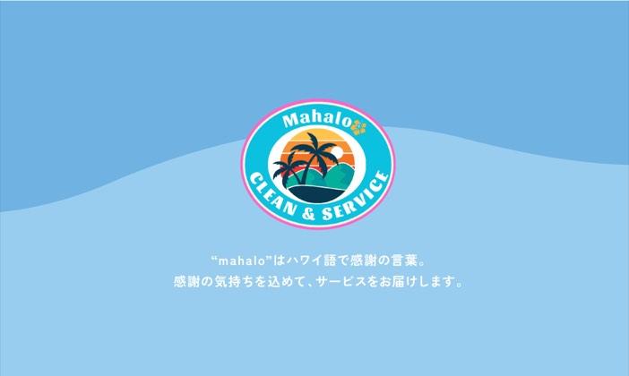
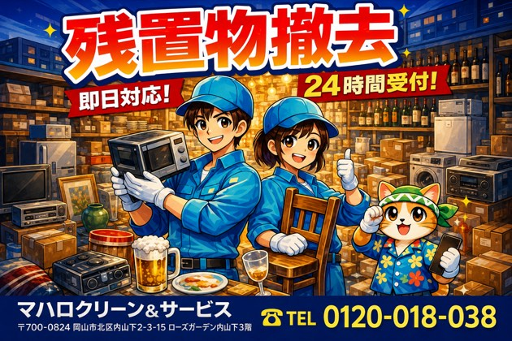
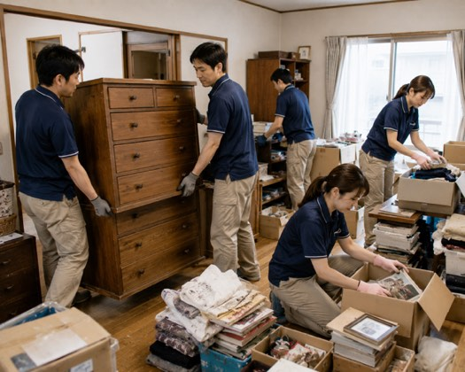
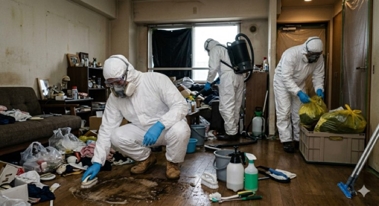
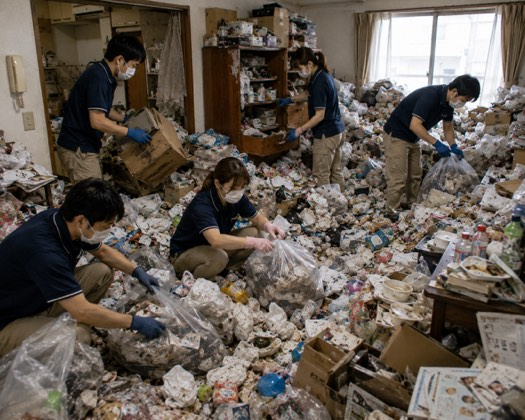
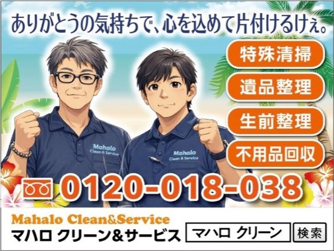

ステージ4から挑むマハロクリーンの覚悟
村田 憲治kenji murata
マハロクリーン&サービス 代表取締役社長
45歳で独立し、配送・引越し業を経てマハロクリーン&サービスを設立。2年半前にステージ4の肺がんを宣告されるも 徹底的に病を学び「がんと共存する」心構えで克服。現在は3週間に1回の治療を続けながら 地域密着で遺品整理や特殊清掃の現場に立ち、多くの人々に感謝を届けるためにアクセルを踏み続ける。
企業サイトを見るCHAPTER 01
引越し業から飛び込んだ清掃・整理事業への原点

Qなぜ地域密着の清掃・整理事業を始めようと思われたのでしょうか?
A私はもともと配送や引越しといった運送関係の仕事を長く続けていました。引越しの現場に毎日立ち会う中で、非常に多くのお客様から「この荷物はもういらないのだけれど、どう処分すればいいだろう」「まだ十分に使えるものだから捨てるのはもったいない」という切実なご相談を受ける機会が多々ありました。
ちょうどその頃、日本の社会全体で高齢化が急激に進んでおり、それに伴って空き家問題なども深刻な社会課題となっていました。こうした時代の大きな流れと目の前のお客様が抱えるリアルな困りごとやニーズが自分の中で一つに結びついたのです。
これから必要とされるのは、ただ荷物を運ぶだけでなく人生の節目におけるお片付けをトータルでサポートする仕事だと確信しました。こうして、遺品整理や生前整理、特殊清掃、ゴミ屋敷の片付けなどを専門に扱う「マハロクリーン&サービス」を立ち上げる決意を固めました。
Q最初はご自身が経営者になることを考えていらっしゃったのですか?
A若い頃は自分が会社の経営者になるなんてこれっぽっちも考えていませんでした。本当にたまたま時代の流れとお客様とのご縁が重なった結果に過ぎません。
私がサラリーマン生活を経て自分の会社を立ち上げてやり出したのは45歳の時でした。決して早いスタートではありませんでしたが異業種での経験や引越し業での下積みがあったからこそお客様の細かなニーズを敏感に察知することができたのだと思っています。
会社を立ち上げてからは自分のためではなく、困っている地域の方々やお客様のニーズにどこまで徹底的にお応えできるかという明確な目的が私の人生の大きな主軸となりました。お客様から寄せられる一つひとつの声に真摯に向き合い、その困りごとを解決していくプロセスそのものがマハロクリーン&サービスを形作る強固な原点となっていったのです。
CHAPTER 02
迅速対応の強みと「感謝の心」で寄り添う覚悟
Qマハロクリーン&サービスの事業の特徴や他社にはない強みについて教えてください。
A私たちの事業は主に管理会社様や不動産会社様からのご紹介によって成り立っています。そのためマンションやアパートといった集合住宅での遺品整理や特殊清掃の現場が多いのが大きな特徴です。数ある同業他社の中で私たちが最も誇る強みは「圧倒的な迅速さ」にあります。お客様や管理会社様からご依頼をいただいたら基本的には数日以内にはすぐ現場に駆けつけるフットワークの軽さを持っています。さらに、どれほど物量が多くて大変な現場であっても整理や清掃の作業自体はわずか1日でピシャリとやり切るスピード感を徹底しています。また、私たちはフランチャイズの仕組みを活用した「出張買取」にも力を入れています。お片付けの際に出てきた不用品であってもまだ価値があるものであればその場で確実な査定を行い買い取らせていただきます。他社が敬遠しがちな特殊清掃やゴミ屋敷の片付けといった難易度の高い領域に特化し、かつスピードと買取の利便性を組み合わせることで、独自の優位性を確立しています。
Q事業を運営する上で、最も大切にされている経営哲学は何ですか?
A当社の姿勢として掲げている「常に目の前のお客様の気持ちになって、深い感謝の心を持って作業に臨むこと」、これに尽きます。私たちの仕事は単に部屋にあるゴミや遺品を右から左へ機械的に片付けるだけの作業ではありません。そこにはかつてそこで暮らしていた方の人生がありご遺族やご依頼主様の様々な想いが交錯しています。






CHAPTER 03
ステージ4のがん克服とこれからの地域密着の挑戦
Q2年半前にステージ4の肺がんを宣告されたと伺いましたが、その時の心境と闘病のプロセスについてお聞かせください。
A今から2年半前、病院でステージ4の肺がんだと告げられたときはさすがに大きなショックを受けました。「自分はもうこのがんで死ぬんだな」と一時は人生を諦めかけたのが本音です。しかし、そこからすぐに気持ちを切り替えました。「がんに勝つためには、まず敵であるがんを死ぬほど勉強して知らなければいけない」と考え貪欲に医学的な知識を学びました。病院での適切な抗がん剤治療に加え日本全国のがん封じで有名な神社を巡ったりご先祖様への感謝を伝えるためにお墓参りを徹底したりと自分にできるプラスアルファの取り組みはすべて実践しました。何よりも大きかったのは心の持ちようです。「がんは憎むべき敵ではなく、自分の体の一部。だから排除しようとするのではなく、共存共栄していこう」そう心から受け入れたのです。その結果、現在ではがんの活動が完全に止まり、実質的に消えている状態を維持しています。3週間に1回の治療は続けており、副作用による物忘れなどはありますが 治療の翌日には元気に現場へ出て仕事ができるほど、驚くほど健康な体を保っています。食事制限も一切せ、好きなものを食べ、タバコもやめずに自分のスタイルを貫いています。
Q今後の長期的な目標や、拠点である地域に対する想いをお聞かせください。
A私にとって仕事は最大の「趣味」です。毎日現場のことを考え、新しいビジネスの展開を組み立てることが楽しくて仕方がありません。ですから、病気を理由に仕事のブレーキを踏むつもりは毛頭なく、これからもアクセル全開で走り続けます。ステージ4のがんを患っていても、これほど元気に社会の第一線で活躍できるのだという生き様を、自らの背中で世の中に示していきたいのです。
具体的な経営目標としては、現在の事業規模をさらに拡大し地域密着で件数を増やしていくことです。県外へ大々的に進出するつもりはありません。人を育てる難しさもありますし、何より顔の見える地域密着を大切にしたいからです。
今後は地域の高齢者施設を定期的に回って生前整理の相談を受けたり、空き家を売りたい人と買いたい人を私たちの片付けを通じて繋げたりとシニア世代の困りごとを一連の流れでワンストップで解決できる仕組みを構築したいと考えています。
足を止めることなく、スピード感を持って地域のために挑戦を続けてまいります。